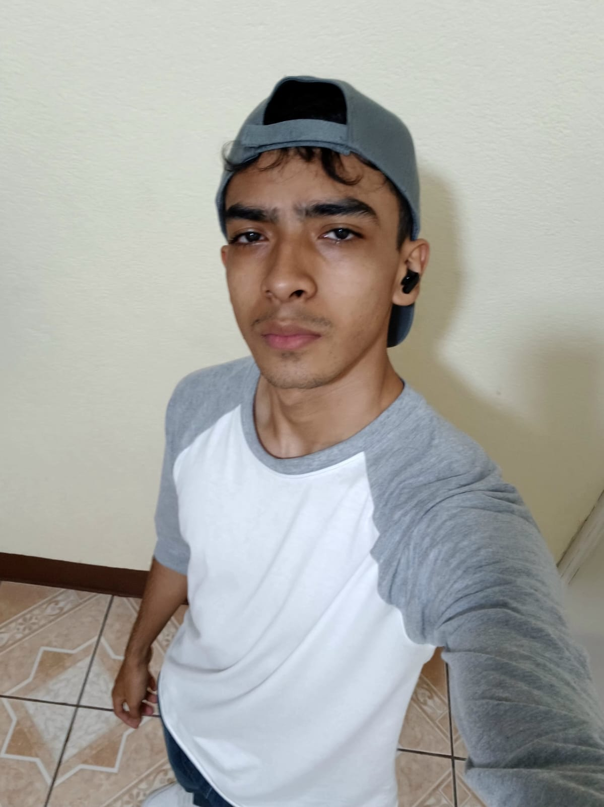
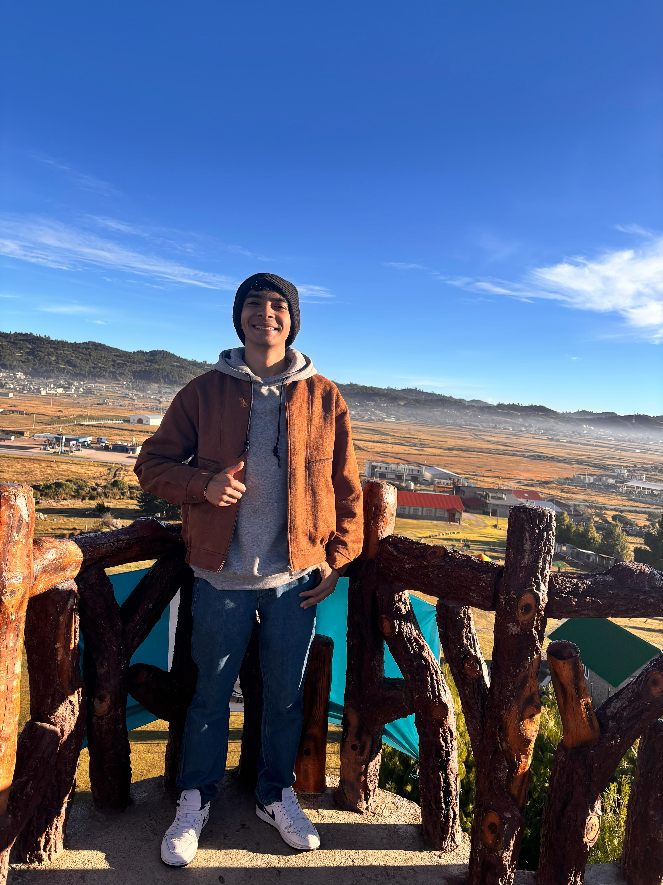

Un poco de mi y de mi estudio
En sí, soy una persona que se compromete mucho en todas las decisiones que tomo. También me gusta mucho aprender cosas nuevas y ponerlas en práctica. Yo creo que también soy una persona que llega a comprometerse demasiado en cumplir mis metas.
Sobre mí


Fuera del ámbito académico, me considero una persona tranquila, me gusta pasar tiempo con mis amigos, jugar, escuchar música, aprender cosas nuevas por mi cuenta tambien me encanta viajar y conocer nuevos lugares de Guatemala, por el momento no he salido del país pero espero hacerlo pronto mas que todo porque ya casi soy mayor de edad.
Expectativas de este año
Pues en este año lo único que espero es que mis conocimientos y mis habilidades puedan mejorar para poder tener un mejor rendimiento académico y personal.
Tiempo dedicado a los estudios: En sí, desde que salgo del colegio solo almuerzo y me conecto a Discord para pasar el tiempo con mis amigos mientras hago mis tareas. En total, el tiempo que me tomo para hacer tareas es de 12:00 a 9:30, si mucho. Aparte, tengo un mini break para despejarme un poco, ya sea que me ponga a jugar o a ver TikTok.
Habilidades que deseo adquirir: Pues por el momento, las habilidades que quisiera adquirir serían un poco más la toma de decisiones sin que nadie me ayude a elegir la correcta, en el sentido de que hay veces en que yo estoy bien, pero por las influencias cambio de decisiones y termino perdiendo.
Pues en sí me comprometo a esforzarme y a cumplir con mis responsabilidades académicas, también a mantener una actitud algo positiva para poder cumplir mis metas sin tantos obstáculos..